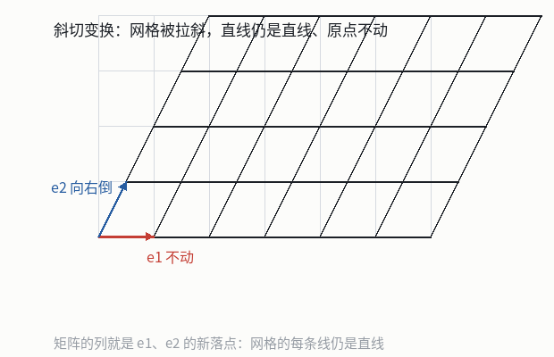

矩阵与线性变换
本节目标：能把矩阵读成对空间的变换，并说出秩与零空间的含义。
一张照片被拉斜了
图像编辑器里的「斜切」动作，改的是每个像素点的位置：横坐标按 x + 0.5y 重算，纵坐标原样不动。写成一行就是 (x, y) → (x + 0.5y, y)。这不是给某个点做特例处理——所有点都按同一条规则移动，原来的正方形网格会被拉成平行四边形，直线仍然变直线，原点原地不动。
这类「整块空间一起动、并且保持直线与原点」的动作，就是这一课要讲的线性变换。它由一张数表决定，那张数表叫矩阵。学会把矩阵读成动作，你就能回答：这个动作把哪些方向压扁了、哪些方向留了下来。
术语：从「缩写」到「动作」
matrix 这个词是 19 世纪的产物，词源是拉丁文的「母体」，西尔维斯特用它表示「数的出生地」——行列式正是从一个数表里生出来的。1858 年凯莱把数表当作独立对象研究，写出矩阵乘法与逆矩阵的规则，当时它只是一个方便的记号：把线性替换的系数抄成方块，算起来省事。
到了 20 世纪，观点翻转了。人们发现真正的主角是变换这件事本身，矩阵只是它在某一组基下的记录方式。于是「线性变换」有了定义：一个映射 T 若满足
T(u + v) = T(u) + T(v) 先加再变换 = 先变换再加
T(c·u) = c·T(u) 先伸缩再变换 = 先变换再伸缩就称为线性的。两条一起说，就是「保持线性组合」：T(c·u + d·v) = c·T(u) + d·T(v)。注意这两条也顺手保证了原点不动——取 c = 0 就能看出 T(0) = 0。
保持加法的映射会把网格的等距性留住：原来等距排列的点，变换后仍等距排列。所以线性变换的效果只有拉伸、旋转、斜切、投影这几种，不会把网格弯成曲线。
矩阵的列就是基向量的落点
定义里有个关键推论。平面上任意向量都能写成基向量的线性组合，(x, y) = x·(1, 0) + y·(0, 1)，于是
T(x, y) = x · T(1, 0) + y · T(0, 1)右边只有两项含未知：T(1, 0) 与 T(0, 1)。只要知道两个基向量各自被送到哪里，整个空间里所有点的落点都定了。 把这两个落点竖着并排写成数表，就是矩阵：
A = [ ↑ ↑ ]
[ T(1,0) T(0,1) ]具体的写法是把落点写成列。以斜切 T(x, y) = (x + 0.5y, y) 为例：基向量 (1, 0) 落在 (1, 0)，基向量 (0, 1) 落在 (0.5, 1)，所以矩阵的两列分别是 (1, 0) 与 (0.5, 1)。
A = [ 1 0.5 ]
[ 0 1 ]验证几个点：A·(1, 0) = (1, 0)；A·(0, 1) = (0.5, 1)；A·(2, 1) = 2·(1, 0) + 1·(0.5, 1) = (2.5, 1)。第 1 课的列视角在这里接上了：矩阵乘向量仍是用列去拼，只是现在每一列有了身份—— 它是某个基向量的落点。

秩：变换后剩几维
变换会把空间压扁。有的矩阵把整个平面仍然摊成平面，有的把平面压成一条直线，还有的把所有点都送到原点。秩（rank）量的就是这件事：变换后空间的维数。平面没被压扁是秩 2，压成一条线是秩 1，全塌到原点是秩 0。
术语的来历也在方程上：19 世纪的数学家数「独立的方程有几个」，发现这个数目决定了方程组的解有多大余地，于是把它叫 rank。放到矩阵上，它就是线性无关的列的最多个数，算法上等于行阶梯形里主元的个数——数一数互相独立的方向还剩几个，比数非零行的形式更本质。
拿斜切矩阵举例，它化成阶梯形就是自身，两个主元，秩为 2：平面没被压扁，只是被拉斜了。再看不那么幸运的矩阵 B = [1 2; 2 4]——第二列是第一列的 2 倍，两列线性相关。消元时 第二行 − 2×第一行 得到一整行零，只剩一个主元，秩为 1：这个变换把整个平面压到了 (1, 2) 那条直线上。
| 矩阵 | 消元后的主元数 | 秩 | 变换的几何效果 |
|---|---|---|---|
[1 0; 0 1] | 2 | 2 | 什么都不动，平面还是平面 |
[2 1; 1 2] | 2 | 2 | 拉伸加旋转，平面还是平面 |
[1 2; 2 4] | 1 | 1 | 平面压成一条过原点的直线 |
[0 0; 0 0] | 0 | 0 | 全部点落到原点 |
零空间：被压掉的方向
秩告诉我们剩下几维，还有一个问题没答：被压掉的是哪些方向？ 定义零空间（null space）为所有满足 A·v = 0 的向量 v 构成的集合——被这个变换送到原点的输入向量。它是输入空间里的一个集合，衡量这个变换「丢掉了多少信息」。
B = [1 2; 2 4] 的零空间是方程 x + 2y = 0 的全部解，也就是 (x, y) = t·(-2, 1) 这条过原点的直线：一维。而斜切矩阵的零空间只有零向量一个元素，维数为 0：它一点信息都没丢（这个动作可以撤销，把每点向左拉回 0.5y 就行）。两者合起来有个漂亮的等式，叫秩-零化度定理：
秩 + 零空间的维数 = 列数 2 = 1 + 1 （B 的情形）直观解释：输入空间的每一维，要么活下来成为输出空间的一维（计入秩），要么落在零空间里（被压掉），没有第三种去向。矩阵的列数就是输入空间的维数，所以两边必然相等。
零空间是矩阵自身的性质，跟右端项 b 无关，它由齐次方程 Av = 0 定义。方程 Ax = b 无解说的是 b 不在列的张成里，那是输出空间的事。把两者混起来，就会出现「无解所以零空间非空」这种错误推理。
用 Python 算一遍
把动作算出来、把秩数出来，都只是几行代码：
A = [[2, 1], [1, 2]]
v = [1, -1]
# 矩阵乘向量：用第 1 课的列视角，每一列乘上对应分量再相加
out = [sum(a * k for a, k in zip(row, v)) for row in A]
print(out) # [1, -1]：这个方向只被拉长，没有被转走
# 数秩：化成行阶梯形后主元的个数（具体算法第 3 课的 lab 里实现）
def rank2(M):
return 2 if M[0][0] * M[1][1] - M[0][1] * M[1][0] != 0 else 1
print(rank2(A), rank2([[1, 2], [2, 4]])) # 2 1第一段验证了 [2 1; 1 2] 把 (1, -1) 送到 (1, -1)：这个方向只被拉长，方向没变。这种「方向不变、只被伸缩」的方向，就是第 5 课要讲的特征向量。
把上面那段存成 transform.py，依次替换 A 的值跑一次，每次先猜结果再看输出：
[[2, 1], [1, 2]]作用在(1, 1)上（猜一猜这个方向变不变）；[[0, -1], [1, 0]]作用在(1, 0)上（这是一个旋转，看看它转了多少度）；[[1, 2], [2, 4]]作用在(2, -1)上（输出应该是零向量）。
第 1 组：答案 (3, 3)
第 2 组：答案是 (0, 1)，逆时针转 90 度
第 3 组：答案是 (0, 0)，(2, -1) 正是零空间的方向第 3 组就是零空间的几何意义：这个向量被压没了，输出里读不出它的任何痕迹。
不看上面的表，对下面两个矩阵各说一遍「秩是几、零空间维数是几、平面被压成了什么」：
C = [ 1 3 ] D = [ 2 -1 ]
[ 2 6 ] [ -4 2 ]数完再用第 1 课的办法验证：找两个被送到同一个点的输入向量（它们的差就在零空间里）。
这一课留下的问题
矩阵是动作、列是基向量的落点、秩是剩下几维、零空间是被压掉的方向——四个说法是同一个东西的四个侧面。下一个问题是实用的：给定 Ax = b，怎么算出 x，怎么在动手之前就知道它有没有解？第 3 课把这三课的工具合成一台机器，并用一个 lab 让你亲手把它写出来。